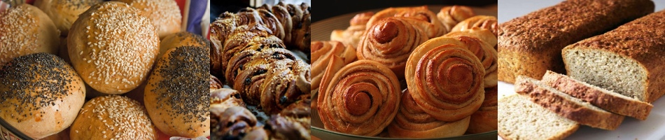

Gjærbakst
Med gjær kan man bake masse, alt fra sunne til usunne bakerverk. Man kan bake boller, horn, brød, kake, skolebolle, rundstykker, og masse mer. På denne siden finnes et lite utvalg av de gjærbakstene som jeg er mest glad i. Kanskje du vil prøve noen av dem selv?
